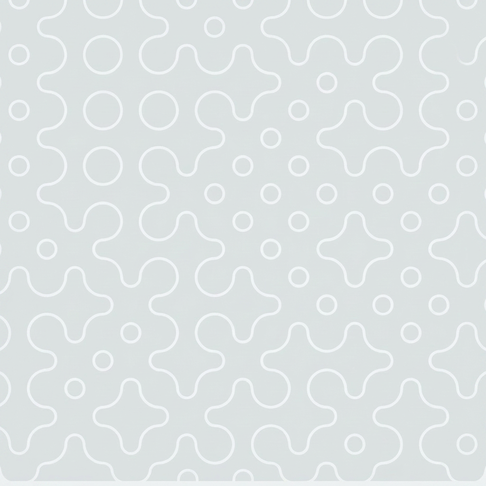
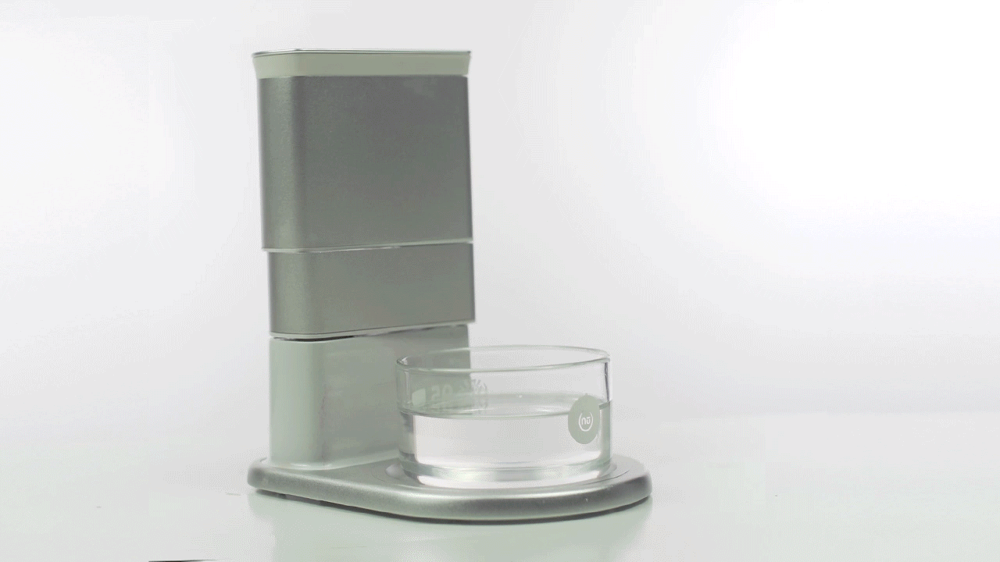
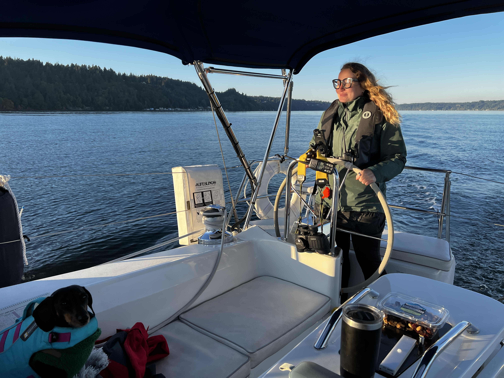

Welcome — password-protected portfolio & résumé

From interaction to architecture — designing AI systems that scale. I work where product strategy, design and engineering intersect — making complex AI systems feel coherent.
Research shapes the questions. Design shapes the answers. Innovation shapes what comes next. I work at the intersection of all three — turning insight into AI products that genuinely advance what people can do.
From research insight and impactful design decisions to shipped product to $800M+ in revenue. Design measured end to end.
Earn trust through design and leadership. I set direction, grow teams and shape agentic AI interactions where transparency and humanised experiences come built in.
Lead with empathy. For users, teammates and every person who interacts with what I design and build.
Never settle. Every detail matters, from a single interaction to an entire system. I blend cultural curiosity with design rigour to create products that feel deeply human — and I run go/no-go UX readiness gates at scale at AWS to hold that standard.
I established an innovation stream at Amazon SageMaker AI — driving new product directions, discovering novel agentic AI design patterns, and pioneering new design processes that didn't exist before. Pushing boundaries by asking what's genuinely new, not just what's different.
Complexity is easy; clarity is hard. Strip away everything that doesn't serve the human.
Agentic systems design · Human-in-the-loop experiences · LLM product design · Design with & for AI
User research & synthesis · Interaction design · Agentic UX patterns · Design systems & prototyping
Vision & roadmap · Cross-functional alignment · Scaling products & teams
Team leadership · Design ops · Hiring & mentoring · Building future leaders
Concept development · Rapid experimentation · 0→1 product creation
Go/no-go UX frameworks for product launches · Building agentic UX teams
Directed design and research strategy and execution for inventing new design patterns and language when designing with and for Agentic AI systems. Crafted design vision and patterns and drove leadership buy-in and inclusion in the products.
See Case StudyLed end-to-end design of SageMaker AI's serverless model customisation - shaping the agentic workflow that lets teams describe a business objective in natural language and have an AI agent generate the full fine-tuning specification. Directed the designer on the project, ran user working sessions with ML teams, and owned UX readiness through launch.
See Case StudyFounded Dovetailed and invented nūfood - taking it from a hackathon concept to a working product exhibited across Europe. As CEO and Inventor, I led a team of 15 across industrial design, hardware and software engineering, food science, and business - directing the core printing technology, the mobile app, and the brand and dining experiences that launched the product publicly.
See Case Study
PhD · FRSA | Head of UX
I'm a design leader with 15+ years shaping user experiences across AI, enterprise, and consumer products. I bridge research, design, and strategy to create meaningful, human-centered systems. As a founder of Dovetailed and Head of UX at Amazon, I've led cross-functional teams and driven UX strategy for global products — including agentic AI products delivering $800M+ in revenue. I thrive in complex problem spaces, and my background spanning HCI, product development, business strategy, and startups gives me a distinct advantage in solving the challenges that matter most, in the most human suitable way.
Directing UX design and innovation team to create new design patterns for designing with and for AI - I focus on human-in-the-loop agentic AI systems. I drive product strategy, run end-to-end usability programs, spearheading the UX operational reviews that ensure that all UX requirements of the product are ready for launches. Driving product strategy and defining design direction across global teams. Mentoring designers and influencing roadmaps across orgs. Presenting at global conferences the latest Agentic AI UX findings.
Leading the UX across multiple AI services at AWS, including AI/ML Personalization, DeepRacer, all edge machine services such as AWS Panorama and SageMaker Edge. Setting cross org UX vision, inventing and driving process for raising UX bar and maturity across organizations. Innovating with new GenAI UX and launching in the products.
Creating Alexa experiences and leading the UX design and research of Alexa Conversations and other similar AI driven products. Leading the Design for AI Principles initiative at Alexa. Managing a team of designers and researchers.
Built and scaled an award-winning UX and innovation studio. Led design and research across sectors — AI, health, food tech, water, and industrial systems. Partnered with startups and large organisations to create new product visions, services, and tools.
Taught and collaborated on design research, HCI, and interdisciplinary methods. Advised PhDs and partnered on future-focused design programmes.
Pioneered human-centered design for industrial software for engineering, design, and operations management across industries like energy, manufacturing, and marine. Directed a team of designers and researchers and influenced leadership to implement novel designs that optimized the industry standards. Tracked and measured the impact of design in this $1.6 billion revenue business, large parts of which were attributed to the design work I and my team produced.
Worked on enterprise UX, improving complex tooling through research and prototyping. Setup a UX design and research team to address challenges when designing GIS systems used by utility companies globally for managing physical network models.
30+ peer-reviewed publications across ACM CHI, CSCW, DIS, and IUI (2007–2025)
I've always been drawn to the problems where the map runs out.
I'm Vaiva Kalnikaitė — design leader, researcher, and founder working at the frontier of AI. I'm currently Head of UX at Amazon Web Services, leading design for agentic AI and human-in-the-loop systems: the practice of designing AI that genuinely collaborates with people rather than simply responding to them.
Before Amazon, I founded Dovetailed, a UX and innovation studio based in Cambridge, UK. Our most recognised work was nūfood — the world's first edible 3D food printer — featured in the Financial Times, BBC World, The Spoon, and Digital Trends.
I hold a PhD in Human-Computer Interaction from the University of Sheffield and am a Fellow of the Royal Society of Arts. My research has earned three Best Paper Awards at ACM CHI and CSCW (top 1% of submissions). Across fifteen years, the products I've led have contributed to over $1B in revenue — The best design decisions don't just improve products — they drive them.
Outside of work I sail, play pickleball, and host dinners for strangers — bringing together people who have never met over food, in support of homelessness charities around Seattle.

Originally from Lithuania. Shaped by Cambridge, UK. Now working at the edge of what AI can become, in Seattle.